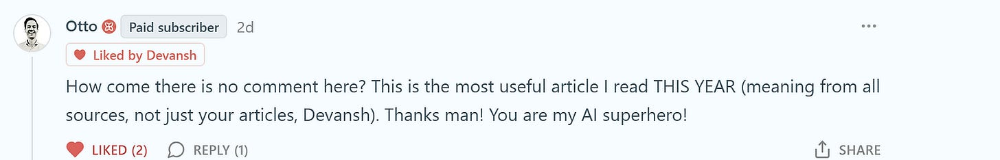

How to use Agentic Coding Tools like Claude Code or Codes Effectively
📝 71 annotationsHow to use Agentic Coding Tools like Claude Code or Codes Effectively
by — Artificial Intelligence Made Simple
Source: — June 21, 2026
(Scroll to the end of the message for the article)
I keep this short.
The mission of Chocolate Milk Cult is simple: make the highest level of AI intelligence accessible to everyone. We don’t do hot takes or aggregated headlines. We do actual deep dives built on original research, custom analysis, and technical frameworks you can use.
The breakdown below is a perfect example of what our open-source research community funds: a premium deep dive on Claude Code built from 300 hours of live deployment testing, exposing concrete structural bottlenecks like the 15-to-20 turn agent degradation cliff. We derived these engineering principles by A/B testing prompt strategies across parallel git worktrees, tracking latency compounding, and forcing multiple team members to run the tool across fundamentally different engineering environments—ranging from legacy backend migrations to fresh frontend builds—to ensure our data didn't overfit for a single workflow or code distribution.
The result was a guide that helped several people rework their entire operation and maximize a ton of value from Claude Code.


While the model weights have updated since our original publication, these core context orchestration principles still carry over seamlessly; in fact, Anthropic still lists these exact constraints as official developer best practices. This is because our research focuses strictly on the invariant mathematical and systems-level realities of the context window, delivering timeless architectural frameworks that hold true across changing software versions.
But running these experiments, funding infrastructure, and securing access to engineers who build these systems costs us between $17,000 and $20,000 a month. These costs add up quickly, but it is the only way to deliver truly differentiated analysis instead of simply repeating PR cycles.
Free subscribers get a lot, and that is intentional. I never want your financial situation to be a barrier to getting the best insights. But paid support is what makes the whole operation possible.
We run a pay-what-you-can model for standard subscriptions so you can contribute whatever matches your budget. There are no tiered content walls so any price point you select will get you access to our entire catalogue of deep dives on Substack.
If you think providing actionable, first-principles AI insights to everyone is valuable, please help support the community at whatever level makes sense for you.
The links for support are below.
Hope to see you among the premium members.
Thanks for reading either way.
Dev <3
PS: ( For enterprise operators, builders, and capital deployers who want to fund our high-overhead experiments directly, we also have a Founding Membership . This tier directly supports our primary-source testing infrastructure. In return, founding members get direct access to our proprietary GitHub repository—where we aggregate our raw data, custom insights, and codebase experiments—along with the ability to request custom deep-dive analysis on specific architectures.)
Every month, the Chocolate Milk Cult reaches over a million Builders, Startup Founders, Investors, Policy Makers, Leaders, and more. If you’d like to meet other members of our community, please fill out this contact form here ( I will never sell your data nor will I make intros w/o your explicit permission ) - https://forms.gle/Pi1pGLuS1FmzXoLr6
Claude Code is one of the most useful agentic tools on the planet (especially after the release of Opus 4.5). It’s incredibly easy to use (once you can get past the terminal interface), but using it well is another issue altogether.
Claude Code pairs two very unfamiliar design decisions with each other—
-
A Command Line Interface reminiscent of a time when the world existed in black and white only.
-
Cutting Edge Agentic systems with deceptively powerful tool-calling abilities, which can compound errors very quickly if not used properly.
Learning to navigate both these decisions is very worth it— CC is my favorite AI tool in the market, and it alone justifies my 200 USD Subscription to Anthropic (I even have the extra usage setup and happily pay around 750-1000 USD/month on it; you likely won’t have to). I wrote this article to help you use it better.
Aside from my personal experience, we dug through heaps of user case studies of Claude Code, dug into Anthropic research, ran over 300 hours of experiments in real deployments, and compiled their experiences into the most useful workflows. The guide that follows is the result. No generic advice like— “Be specific.” “Give examples.” “Break down complex tasks.” This guide will cover:
- Why context orchestration matters more than prompt wording—and what that means for your use
-
The terminal-first design philosophy and why it’s a feature, not a limitation
-
Autonomy configuration: permission allowlists, full auto mode, and when each makes sense
-
The ~15-20 turn degradation cliff and how to work around it
-
CLAUDE.md: what belongs, what doesn’t, and why less is more
-
The failure modes you’re probably hitting—and how to actualy fix them.
-
Workflows that actually work: explore→plan→code→commit, TDD loops, parallel instances, writer-reviewer splits
If you’ve been looking to take your Claude Code usage to the next level, then this guide is for you.

-
Claude Code is not ChatGPT with file access—it’s an autonomous agent with tools, permissions, and execution authority operating inside a finite context window. Treating it like a chatbot is the root cause of most failures, not prompt quality.
- Context orchestration is the game, not prompt engineering. Every file, instruction, command output, and conversation turn competes for attention in the same window. Polluted context produces garbage regardless of how clever your prompt is; clean context lets mediocre prompts succeed. More context is often worse.
- The terminal-first design isn’t a limitation—it’s the point. Running alongside your shell gives Claude access to CLI tools, scripts, CI hooks, parallel worktrees, and headless automation that IDE-embedded assistants physically cannot touch. You trade inline suggestions for system-level composability.
-
Autonomy is a dial. Default permission prompts maximize safety but destroy flow. Custom allowlists or full autonomous mode (with version control as your safety net) restore the agentic value. Productivity scales with autonomy once rollback is cheap.
-
Agent performance degrades after ~15-20 turns—repetition, instruction drift, hallucinated claims. This is a hard limit, not a soft one. Effective users reset context, decompose tasks, or externalize state (commits, checklists) instead of pushing through.
-
CLAUDE.md should be minimal and operational: build commands, critical paths, non-obvious constraints. Bloated instruction files trigger Chekhov’s gun—models try to use everything they’re given, including irrelevant guidance. Less is more.
-
The failure modes are structural, not model-level: premature execution, context contamination, over-specification, permission friction, ignoring terminal feedback. Each has a mechanical fix. If you’re blaming the model, you’re misdiagnosing.
The governing rule: If you don’t control context, you don’t control outcomes. Claude Code doesn’t reward clever prompting. It rewards system design.
I provide various consulting and advisory services. If you‘d like to explore how we can work together, reach out to me through any of my socials over here or reply to this email.
Most people approach Claude Code like they approach ChatGPT: type a request, get an answer, repeat. This guarantees mediocrity.
Claude Code isn’t a chatbot that happens to edit files. It’s an autonomous agent operating in your codebase with a constrained set of tools, a limited context window, and permission gates you control. Understanding this shift is key to leveraging this system more effectively. That’s the difference between CAM McTominay vs CDM McT.
You may forget your lovers birthday, but never forget this mental model: Claude Code is context orchestration. The quality of your outputs is downstream of how well you curate the information space Claude operates in.
Every file you reference, every CLAUDE.md instruction, every conversation turn, every external tool connection—all of it shapes the context window Claude reasons within. Most users optimize their prompts. Power users optimize their context.
This parallels how prompting works at a deeper level. In the prompting guide, we discussed “semantic neighborhoods”—how your instructions steer the model toward regions of its latent space where good answers become statistically likely. Claude Code adds another layer: you’re not just steering with words, you’re steering with what information exists in the context at all .

A brilliant prompt in a polluted context produces garbage. A mediocre prompt in a well-curated context often produces something usable.
(As a fun fact— this is why Claude within Claude Code is so much better than Claude in Cursor and Co.; Claude leverages many tools to ensure that it’s context stays clean).

This is very important to understand for one of the biggest UX shifts that Claude Code users are hit with, especially when you’ve only worked with IDEs (like me).
The terminal interface throws people off. After years of IDE integrations and inline suggestions, a CLI feels like regression.
It’s not. It’s a deliberate design choice that unlocks capabilities IDE integrations can’t match. Terminal-first means:
-
Full access to your environment. Claude inherits your shell, your PATH, your tools. The
ghCLI for GitHub operations,jqfor JSON parsing,ripgrepfor fast code search,dockerfor container management, your custom deployment scripts—Claude can use all of them. An IDE assistant sandboxed to the editor can’t run arbitrary commands across your system. - Scriptability. Claude Code has a headless mode ( -p flag) that lets you pipe it into CI pipelines, pre-commit hooks, and automation scripts. You can have Claude automatically triage GitHub issues as they come in, run code review on every PR, or generate documentation on commit. Try doing that with an IDE extension.
- Composability. You can run multiple Claude instances in parallel across git worktrees, each with separate context windows working on independent tasks. One instance refactors your authentication system while another builds an unrelated data visualization component. The terminal is the natural interface for this kind of orchestration.
-
No vendor lock-in on your editor. Use VS Code, Neovim, JetBrains, whatever. Claude Code operates alongside your tools, not inside them.
The tradeoff is real: you lose inline suggestions, visual diffs, and the “code appears as you type” magic.

If that’s your primary workflow—quick edits, tab completions, surgical changes—something like Cursor or Augment might be the better fit (I haven’t been very excited by Cursor in the past, but their new updates have been pretty good from what I hear). But if you’re doing complex, multi-file work that requires reasoning across a codebase—refactors, migrations, debugging distributed issues—the terminal-native model scales where IDE integrations hit walls.
Out of the box, Claude Code asks permission for almost everything: file edits, bash commands, and external tool calls. This is by design—safety-first defaults for an agent that can execute code on your machine.
But it creates a workflow problem. You give Claude a task, walk away to check Slack, come back five minutes later, and it’s sitting there waiting for approval to edit a file. The whole point of an agent is that it agents . Constant permission prompts break that.

You have a dial here, and you need to decide where to set it:
Maximum safety: Default permissions. Claude asks before any mutation. Good for unfamiliar codebases, production environments, or when you’re learning the tool. I personally would almost never recommend it.
Balanced flow: Custom allowlist via .claude/settings.json . Permit file edits, common commands like git commit and npm test , and trusted external tools. Block destructive operations like rm -rf or database drops. This is where most users land.
Maximum autonomy: The --dangerously-skip-permissions flag. Claude runs uninterrupted until completion. Despite the scary name, this is the daily driver for many Anthropic engineers. The practical risk is low in a version-controlled codebase where you can revert anything. For true isolation, run it in a Docker container without network access. I personally run this as my default, and I’ve never had issues here.
Many power users create a shell alias: alias cc= “claude --dangerously-skip-permissions”. Type cc, start working, no interruptions.
There’s no universally correct setting. The right choice depends on your risk tolerance, the task at hand, and whether you’re running Claude in a sandboxed environment. But you need to make the choice consciously rather than accepting the defaults and getting frustrated.

If context orchestration is the game, then your job when using Claude Code is:
-
Curate what enters context. Be deliberate about which files you reference, what history accumulates, and what persistent instructions you set in CLAUDE.md.
- I nvest heavily in documentation . Tools like Claude Code and Codex can often overlook key details because of incomplete searches. People often think that these CLI tools don’t need documentation because they can search through, but Claude Code uses text/regex-based search; ensuring that your documentation can guide this search better is a must to ensure your product has everything it needs. My recommendation is to use specific “guidance documents” where you map out important pieces of logic so that AI knows where to look. If you have the budget for it (and a very large codebase with no documentation), my recommendation is to use Augment Code CLI to write extensive amounts of documentation that can be used by CC for improvements. A good rule of thumb is given below—
-
Prune what pollutes context. Clear irrelevant history with
/clear. Reset between unrelated tasks. Don’t let a debugging session contaminate a feature build. - Extend context reach. Connect Claude to external tools—Puppeteer for browser automation and screenshots, Sentry for error monitoring, PostgreSQL for database queries, Slack for team communication. Each connection expands what Claude can perceive and act on.
- Set appropriate autonomy. Match permission levels to the task and your risk tolerance. Don’t fight the tool’s safety defaults; configure them to match how you actually work.
Once we understand this, we can move on. The next section covers the foundational setup—the concrete configuration decisions that shape your context environment before you write a single prompt.
Before you write a single prompt, your configuration decisions shape everything Claude can do. This section covers the concrete setup that separates productive sessions from frustrating ones.
CLAUDE.md is a file Claude automatically loads at the start of every session. It’s the highest-leverage configuration point you have—(anecdotally) instructions here get followed more reliably than anything you type in the chat.
The hierarchy matters:
-
~/.claude/CLAUDE.md applies to all your projects
-
./CLAUDE.md in repo root is shared with your team via git
-
./CLAUDE.local.md is personal and gitignored
-
Child directories can have their own CLAUDE.md files for specific subsystems
Most people either leave this empty or stuff it with everything they can think of. Both are wrong.
What to put in CLAUDE.md:
-
Build and test commands (npm run build, pytest -xvs)
-
Branch naming conventions and merge/rebase preferences
-
Key file locations Claude can’t infer (”authentication logic lives in src/auth/, not src/users/”)
-
Project-specific gotchas (”the legacy API in /v1 is deprecated but still receives traffic”)
-
Environment setup quirks (”use pyenv local 3.11 before running tests”)
What NOT to put in CLAUDE.md:
-
Style guides. Never send an LLM to do a linter’s job . ESLint, Prettier, Black—these are faster, cheaper, and more reliable. Claude will read your existing code and match patterns anyway (this is the benefit of latent space guidance).
-
Obvious folder descriptions. If your folder is named components, you don’t need to explain it contains components.
-
Generic instructions like “write clean code” or “follow best practices.” These waste tokens and don’t change behavior.
Here’s the key insight from various research: models are naturally inclined to use all information they’re given, even when it’s irrelevant. Anthropic researchers call this the “Chekhov’s gun” effect. A bloated CLAUDE.md doesn’t just waste tokens—it actively degrades performance by introducing distractors.

Keep it lean. I’ve seen effective CLAUDE.md files under 50 lines. I’ve also seen 500-line monsters that made Claude worse at everything.
Run /init to generate a starting point, but don’t trust it blindly. Claude will capture obvious patterns but miss your team’s actual conventions. Treat it as a draft to refine, not a finished product.
I covered the autonomy dial in Section 1, but here’s the practical setup.
Your options for allowing tools:
-
During session: When Claude asks permission, select “Always allow” for tools you trust
-
Via /permissions command: Add specific tools to your allowlist interactively
-
In .claude/settings.json: Configure once, check into git, share with team
-
CLI flag: --allowedTools for session-specific permissions
A reasonable starting allowlist for most projects includes Edit, Write, and Bash commands for git operations (add, commit, push) and your build/test scripts (npm test, npm run build). This lets Claude edit files and run your standard workflow without asking. It’ll still prompt for anything outside the list.
For full autonomous mode, I just use an alias—cc mapped to claude --dangerously-skip-permissions. I work in version-controlled repos (if you’re using ADEs this is a non-negotiable), I commit often, and I can revert anything. The productivity gain is worth it. Your risk tolerance may differ.

MCP (Model Context Protocol) connects Claude to external tools and data sources. Without it, Claude is limited to your filesystem and shell. With it, Claude can query databases, control browsers, post to Slack, read from Notion, and more.
The MCP servers I actually use:
-
PostgreSQL/MySQL for database queries. Claude can check schemas, run queries, verify data. Much better than having it guess at your data model.
-
GitHub for complex PR workflows and issue management beyond what the gh CLI offers.
-
Sentry for error monitoring. Claude can pull recent errors, stack traces, and frequency data when debugging production issues.
-
I tried some Codex MCPs for review, but they did not work. I heard really good things about it, so if you have tried it successfully, would love to hear about this.
You configure MCP servers in three places:
-
.claude.json in your home directory (global)
-
.claude/settings.json in your project (project-scoped)
-
.mcp.json in your repo root (shared with team via git)
A warning: each MCP server adds tool definitions to your context window. If you enable ten servers you’re not using, you’re burning tokens on tool descriptions Claude will never call. Enable what you need, disable what you don’t. You can check what’s consuming your context with /context.

Slash commands are reusable prompt templates. Put a markdown file in .claude/commands/, and it becomes available as /project:filename.
I use these constantly. For example, a fix-issue.md command that takes an issue number as an argument, runs gh issue view to get details, searches the codebase for relevant files, implements the fix, writes tests if appropriate, and commits with a descriptive message referencing the issue. Now /project:fix-issue 1234 handles the entire workflow.
Same idea for code review—a command that checks for bugs, edge cases, security issues, and performance concerns without the verbose commentary Claude defaults to.
Personal commands go in ~/.claude/commands/ and work across all projects. Project commands in .claude/commands/ get shared with your team when committed.
The $ARGUMENTS placeholder passes whatever you type after the command name. Simple but powerful.
Three commands you need to internalize:
/clear wipes conversation history. Use this between unrelated tasks. A debugging session and a feature build shouldn’t share context. I /clear constantly—probably every 20-30 minutes of active work.
/compact summarizes conversation history to free up tokens while preserving key information. Use this when you’re mid-task but context is getting bloated. Auto-compaction triggers at 95% capacity, but by then you’ve already degraded performance. Compact proactively around 70%.

/context shows what’s consuming your context window. Run this when Claude seems slow or unfocused. You’ll often find old tool results, irrelevant file contents, or MCP server definitions eating your token budget.
Research on coding agents found that performance craters after roughly 20 iterations. Not 100. Not 50. Twenty. The developers who treat this as a hard limit—resetting context proactively rather than waiting for degradation—get consistently better results.
My rule: if I’ve been going back and forth with Claude for more than 15-20 turns on a single task, something is wrong. Either the task needs decomposition, or I need to reset and try a different approach. One interesting thing about ADEs is that it can often be much cheaper to rebuild from scratch than to try to fix what’s broken, so you should not be shy about reverting to the last stable states. This does increase the value of code review, however, because you want to be able to identify the last stable state and see what about it might push an AI in certain directions/what the issue could be.
Before starting a new project with Claude Code:
-
Run /init to generate starter CLAUDE.md
-
Edit CLAUDE.md down to essentials—build commands, key paths, gotchas
-
Configure permissions in .claude/settings.json
-
Add MCP servers you’ll actually use
-
Create 2-3 slash commands for your common workflows
-
Commit .claude/ directory to share with team
This takes maybe 15 minutes. The productivity difference over a week of work is hours.
Now that your Claude Code is ready to be the CTO of your new AI-based sneaker Recommendation app with an element of gambling, you’re probably ready to start coding. But I would recommend holding your horses, because just as CC can write good code fast, it can also chef up spaghetti fast enough to make Takumi Aldini jealous.
We’ve discussed many of these failures at length either in earlier sections or prior deep dives. So I’ll keep this one short and direct, meant more for completeness/to have everything in one place for easy lookup.

It is very important for you to break your lifelong commitment to be a two-pump chump when using Claude Code . This is the number one cause of failure with Claude Code.
CC starts coding before understanding the problem. If you’ve given it autonomy, you’ll end up three iterations deep solving the wrong thing or married to the wrong approach.
Fix: explicit staging. “Read the relevant files and understand the current implementation—don’t write code yet.” Then: “Propose a plan.” Only then: “Implement.” The words “think” and “think hard” trigger extended reasoning and actually allocate more compute. Planning mode is a godsend since reading its thoughts is also easier than debugging walls of code flying at you.

You debug for an hour, then switch to a new feature without clearing context. Claude drags forward assumptions, references, and attention anchors from the debugging session.
Fix: /clear between unrelated tasks. I clear every 20-30 minutes on heavy usage. The cost of re-establishing context is lower than the cost of degraded performance.
Research shows agent performance craters after ~20 turns. Symptoms: Claude repeats itself, ignores instructions, claims to have done things it didn’t.
Fix: treat 15-20 turns as a hard limit. If you’re still going, either decompose the task or reset with a fresh summary.
People stuff CLAUDE.md with style guides, ADRs, and API docs. Now every session starts with 1500 tokens of mostly-irrelevant instructions, and Claude tries to use all of it (Chekhov’s gun effect).
Fix: under 50 lines. Point to docs during specific tasks, don’t load them into every session.
Expecting complex tasks to work on the first try. They won’t. Requirements are ambiguous, edge cases emerge during implementation.
Fix: treat first outputs as drafts. Build in verification—tests, screenshots, behavior checks. Build modularly to ensure that you can make changes easily and regularly think about refactoring code before starting major expansions to capabilities to make sure you firm up the foundations.
500-word prompts specifying exactly how to implement something. You’ve wasted effort on details Claude would figure out, and anchored it to your approach (which might not be best).
Fix: specify the what, be loose on the how. “Add rate limiting—max 5 attempts per 15 minutes” beats a detailed implementation spec.
Still manually approving file edits and git commits after a week of use? You’re wasting your own time.
Fix: configure your allowlist or use --dangerously-skip-permissions.
Claude runs commands, they fail, and Claude struggles. You watch without reading the errors.
Fix: read the output. You often know things Claude doesn’t—wrong paths, missing env vars, version mismatches. You’d be surprised how often Claude can pick the wrong approach or prioritize the wrong aspects; it helps a lot if you monitor the outcomes on a regular basis.
Pro tip— if an issue has been a problem for more than one hour, Claude likely has completely misunderstood something. Revert your changes to the last place you understood, and then look through the logs. Then start talking to CC about your speculations on the code-base and what could be causing issues.
Complex tasks fill your context with research and dead ends. Subagents keep exploration isolated and return only conclusions.
Fix: “Use a subagent to research how X currently works.” Main context stays clean.
With all of this covered, we’re now ready to use Claude Code Workflows properly.

These are the patterns that actually work. Not theoretical—these are workflows I use and that Anthropic engineers use internally.
The default workflow for any non-trivial task.
-
Point Claude at relevant files. “Read src/auth/ and understand how authentication currently works. Don’t write code.”
-
Have it propose a plan. “Now propose how you’d implement OAuth support. Think hard about edge cases.”
-
Review the plan. Push back, ask questions, refine.
-
Execute. “Implement the plan.”
-
Commit. “Commit with a descriptive message.”
The explicit “don’t write code” in step 1 matters. Without it, Claude jumps to implementation. The “think hard” in step 2 allocates more reasoning compute.
For complex problems, have Claude use subagents during exploration. “Use a subagent to investigate how the session management works” keeps research out of your main context.

This workflow takes longer than just asking Claude to implement something. It also works far more often.
When the success criteria can be expressed as tests.
- “Write tests for the feature I’m describing. Cover the happy path and these edge cases: [list]. Don’t implement yet. (Claude has a subagent for planning; spam ts).”
- “Run the tests, confirm they fail.”
-
“Implement code to make the tests pass. Keep iterating until green.”
-
“Commit tests and implementation separately.”
Claude excels when it has a clear target to iterate against. Tests provide that. Each red-to-green cycle gives Claude feedback it can act on.

This also protects you from Claude solving the wrong problem—the tests define what “right” means before implementation starts.
I use this for any backend logic, API endpoints, data transformations. Less useful for UI work where “correct” is visual.
When success is “it looks right” or “it works in the browser.”
-
Give Claude a target—screenshot, Figma mock, or verbal description of desired UI.
-
Have Claude implement.
-
Claude takes a screenshot (via Puppeteer MCP or you paste one in).
-
“Compare to the target. What’s different? Fix it.”
-
Iterate until it matches.
Claude’s first UI attempt is usually 60-70% right. After 2-3 iterations with visual feedback, it’s usually 95%+. Without the feedback loop, you’re stuck at 60-70% and doing the rest manually.
Also useful for debugging—”here’s a screenshot of the broken state, here’s what it should look like, fix it.”
This is one area I’m hearing some comments about, Codex being very good, and Gemini 3.0 has been cleaning house with UI design. On top of this, Cursor dropped an elite update for visual design. This is likely the one area where I expect CC to face the heaviest competition.
When you have independent tasks that don’t need to share context.
Setup: multiple terminal tabs or VS Code panes, each running a separate Claude instance. Or use git worktrees so each instance works on a separate branch.

Instance 1 refactors the auth system. Instance 2 builds a new dashboard component. Instance 3 writes documentation. No shared context, no cross-contamination, 3x throughput.
The key word is independent. If tasks interact—one depends on the other’s output, they touch the same files—this creates merge conflicts and confusion. For truly parallel work, it’s excellent.
Git worktrees make this cleaner:
-
git worktree add ../project-feature-a feature-a
-
Open that directory in a new terminal
-
Run Claude there
-
Repeat for other features
Each worktree is a separate checkout. Claude instances can’t step on each other.
When you want quality control built into the workflow.
-
Claude A writes the code.
-
/clear or start a fresh Claude instance.
-
Claude B reviews what Claude A wrote—bugs, edge cases, security issues.
-
Take feedback back to Claude A (or a fresh instance) to address issues.
Separate context matters here. Claude reviewing its own work in the same session tends to defend its choices. A fresh instance with no investment in the code reviews more critically.

I use this for anything going to production. Overkill for exploratory work.
When Claude should run without you.

The -p flag runs Claude in non-interactive mode. Pipe in a prompt, get output, done.
Uses I’ve actually set up:
-
Pre-commit hook that runs Claude on staged files to check for obvious issues
-
GitHub Action that triages new issues with labels
-
PR reviewer that comments on diffs (use /install-github-app to set this up quickly)
-
Script that runs Claude on each file in a migration, one at a time
For batch operations: write a script that loops through items (files, issues, whatever), calls claude -p with a prompt for each, and collects results. Add --output-format json if you need structured output for further processing.
Combine with --allowedTools to restrict what headless Claude can do. You probably don’t want an automated script running with full permissions.
For large tasks with many steps—migrations, multi-file refactors, launch checklists.
-
Have Claude write a checklist to a markdown file. “Create CHECKLIST.md with every file that needs updating for this migration.”
-
Claude works through items one by one, checking them off.
-
The file serves as progress tracking and recovery point if context resets.
This externalizes state. If Claude hits the 20-iteration cliff and you need to reset, the checklist shows what’s done and what’s left. Paste it into the fresh session and continue.

Also useful for team handoffs—the checklist is documentation of what’s been done.
Claude Code isn’t powerful because it writes code quickly. It’s powerful because it lets you externalize cognition into a system you can actually control. Context, autonomy, feedback, and verification aren’t secondary concerns here; they are the product. Everything else—prompting, clever phrasing, even model choice—is downstream.
Once you internalize this, there’s no going back. Prompting starts to feel like a local optimization. IDE magic feels cosmetic. When something goes wrong, you stop asking why the model “behaved strangely” and start asking what information you gave it, what permissions you allowed, and what feedback loop you failed to close. The mystery evaporates.
This is where the real split emerges. Most people use Claude Code as a faster pair of hands. Operators design environments where failure is hard and success is boringly inevitable. Same tool, completely different outcomes. The difference isn’t intelligence; it’s orchestration.
There’s a simple rule that governs everything you’ve read: if you don’t control context, you don’t control results. Almost every complaint about coding agents—hallucinations, brittleness, wasted time—traces back to violating that rule. Not a bad model. Bad setup.
Claude Code won’t make you a better engineer. It will make it very obvious whether you already think like one.
Thank you for being here, and I hope you have a wonderful day,
Dev <3
That is it for this piece. I appreciate your time. As always, if you’re interested in working with me or checking out my other work, my links will be at the end of this email/post. And if you found value in this write-up, I would appreciate you sharing it with more people. It is word-of-mouth referrals like yours that help me grow. The best way to share testimonials is to share articles and tag me in your post so I can see/share it.

Use the links below to check out my other content, learn more about tutoring, reach out to me about projects, or just to say hi.
Small Snippets about Tech, AI and Machine Learning over here
My (imaginary) sister’s favorite MLOps Podcast-
https://machine-learning-made-simple.medium.com/
My YouTube: https://www.youtube.com/@ChocolateMilkCultLeader/
Reach out to me on LinkedIn. Let’s connect: https://www.linkedin.com/in/devansh-devansh-516004168/
My Instagram: https://www.instagram.com/iseethings404/
My Twitter: https://twitter.com/Machine01776819
Original: